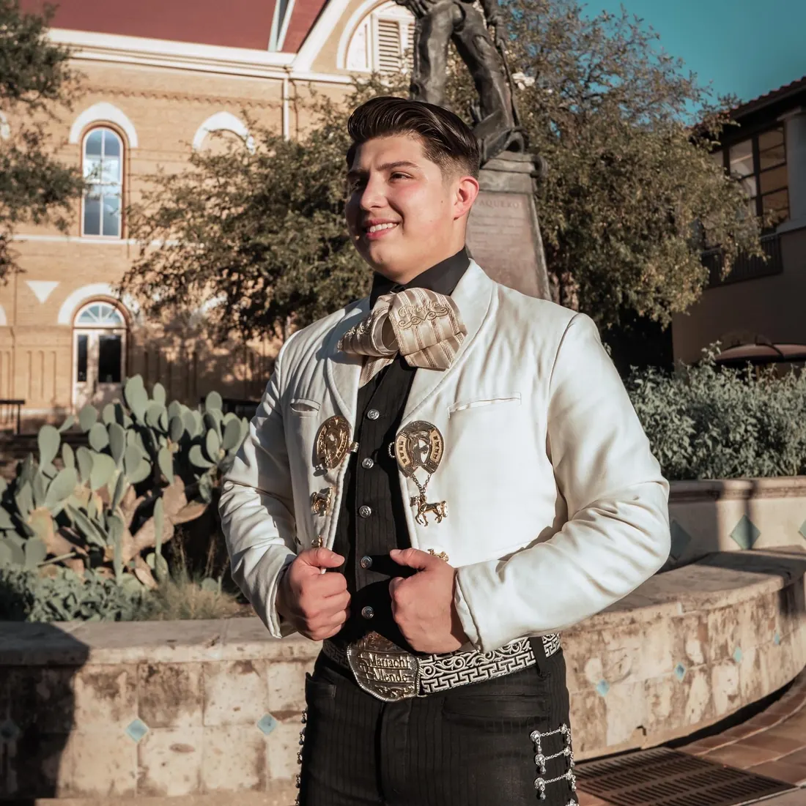
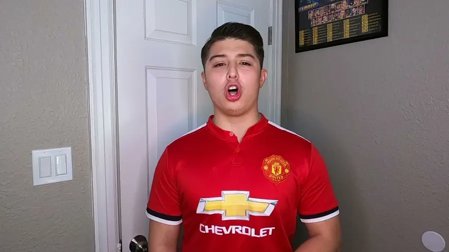
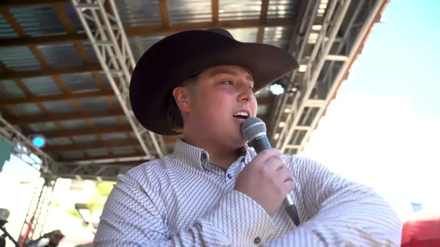
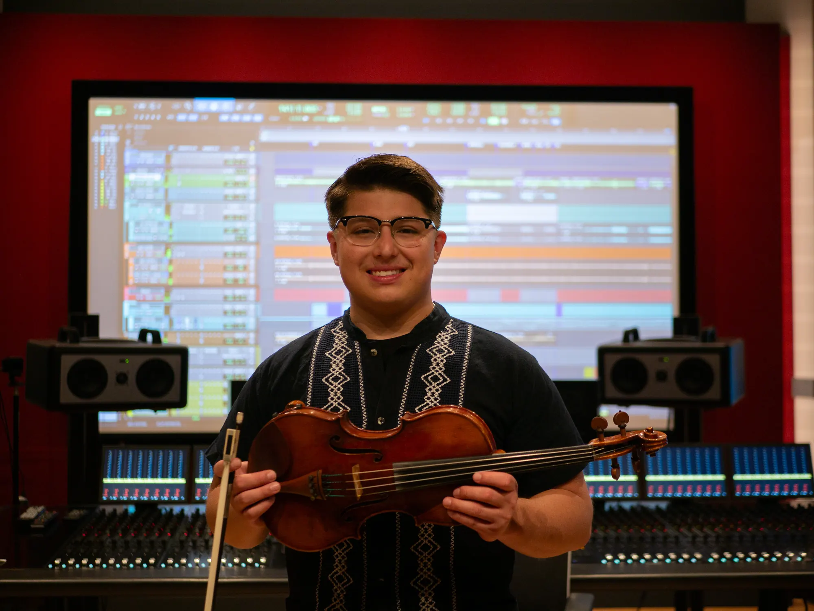

Raised on rancheras. Trained at Berklee.
Saul Eduardo is a mariachi violinist and singer, songwriter and producer, here to play your event or bring your record to life.
RancheraCumbiaBoleroRegional MexicanPop
On stage, or in your session.
Mariachi violin & voice
Ranchera, cumbia, bolero and more, played and sung by a violinist who grew up on Mexican music in Dallas.
Recording musician
Tracking in your session as violinist, singer, background vocalist or trumpeter.
Private lessons
Violin and voice lessons for all ages and skill levels.
Music production
A creative producer for your project, from Regional Mexican to pop and Afro-Cuban.
Recording engineer
Lead or assist as recording engineer for all instruments and voices.
Songwriting
Tired of singing covers? Saul helps you start writing your own songs.
Composition & arranging
Original compositions, or a rearranged favourite cover that sounds like you.
Hear him play.



Violin, voice and trumpet in front of the glass. Production and engineering behind it.
Mexican roots, classical hands.
Raised in Dallas in a Mexican household, Saul grew up surrounded by traditional Mexican music. He trained as a classical violinist and vocalist, and he digs into his roots as both violinist and singer in mariachi.
Berklee College of Music, Valencia
Texas State University
Booker T. Washington HSPVA
Podcasts
CharroBeans
A mariachi podcast with Sammy Ramirez and Victor Estrada.
(opens in a new tab)Music Business 101
With Luis Guinea of Moctezuma Music.
Let’s make some music.
A performance, a session, a production or lessons. Call or send the details and Saul will get back to you with a quote.